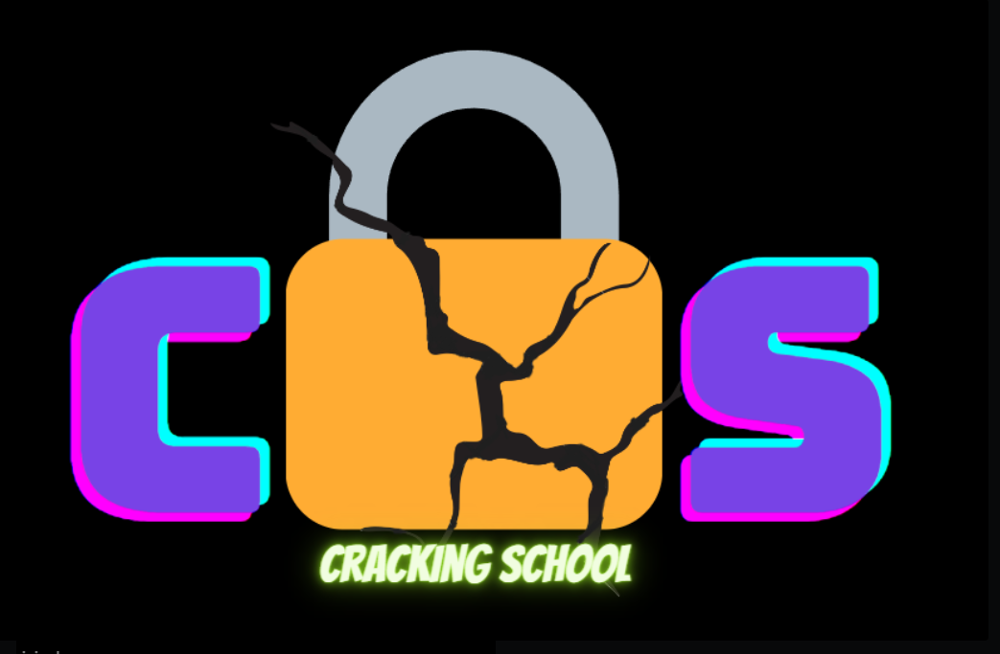

How do Attackers use Dictionary Based Attacks?

What are Vulnerabilities Attackers Look For?
In this section we will be viewing and understanding a attackers Point of View (POV) and the different reosurces they utilize to attack
and identify victims. We will simulate and create an environment where users can get hands-on-experience when conducting this class

Password Best Practices
we will also be understanding the importance of encryption, we will create an environment where the user can learn about the encryption,
how it is done and also get hands-on-experience trying out encryption.